Author: Lukas Hörtnagl (holukas@ethz.ch)
Separate gap-filling for 2017, 2018 and 2022Low flux availability for 2017, 2018 and 2022
Build model from all measured data (2012-2022) and use it to gap-fill these three years
Basically what this notebook does is it removes the gap-filled fluxes (not the measured fluxes, they remain in there for model building) for the three years, and then trains one single model on all available flux data (2012-2022). Then, completely new gap-filled flux version for the complete time range (2012-2022) is built. From that version, data for the three years (2017, 2018, 2022) replace the data in the previously gap-filled version.
Imports#
This notebook uses
diive(source code) to check eddy covariance fluxes for quality
import importlib.metadata
import datetime as dt
from datetime import datetime
import pandas as pd
import numpy as np
import matplotlib.pyplot as plt
from pathlib import Path
from diive.core.io.files import save_parquet, load_parquet
from diive.core.plotting.timeseries import TimeSeries # For simple (interactive) time series plotting
from diive.core.dfun.stats import sstats # Time series stats
from diive.core.plotting.heatmap_datetime import HeatmapDateTime
from diive.pkgs.gapfilling.randomforest_ts import RandomForestTS
from diive.core.plotting.cumulative import CumulativeYear
import warnings
warnings.filterwarnings('ignore')
version_diive = importlib.metadata.version("diive")
print(f"diive version: v{version_diive}")
diive version: v0.85.5
Define variables#
Target variable#
Needed: the fully quality-controlled flux before gap-filling
This variable will be gap-filled
ustar_scenario = "CUT_50"
MEASURED_var = f"FN2O_L3.1_L3.3_{ustar_scenario}_QCF"
GAPF_var = f"{MEASURED_var}_gfRF"
FLAG_var = f'FLAG_{GAPF_var}_ISFILLED' # Gap-filling flag, 0=measured, 1=filled best quality, 2=filled fallback option
suffix = "FN2O"
gain = 0.0002521206 # Conversion factor to convert nmol N2O m-2 s-1 to kg N2O-N ha-1
units = r'($\mathrm{kg\ N_2O-N\ ha^{-1}}$)' # Units for N2O flux, used in cumulative plots only
Features#
# Management variables
MGMT_VARS = [
"TIMESINCE_MGMT_FERT_MIN_FOOTPRINT", "TIMESINCE_MGMT_FERT_ORG_FOOTPRINT",
"TIMESINCE_MGMT_GRAZING_FOOTPRINT", "TIMESINCE_MGMT_MOWING_FOOTPRINT",
"TIMESINCE_MGMT_SOILCULTIVATION_FOOTPRINT", "TIMESINCE_MGMT_SOWING_FOOTPRINT",
"TIMESINCE_MGMT_PESTICIDE_HERBICIDE_FOOTPRINT", "TIMESINCE_PREC_RAIN_TOT_GF1_0.5_1"
]
# Already lagged variants of SWC, TS and PRECIP
AGG_VARS = [
# SWC
"SWC_GF1_0.15_1_gfXG_MEAN3H",
".SWC_GF1_0.15_1_gfXG_MEAN3H-24", ".SWC_GF1_0.15_1_gfXG_MEAN3H-18",
".SWC_GF1_0.15_1_gfXG_MEAN3H-12", ".SWC_GF1_0.15_1_gfXG_MEAN3H-6",
# TS
"TS_GF1_0.04_1_gfXG_MEAN3H",
".TS_GF1_0.04_1_gfXG_MEAN3H-24", ".TS_GF1_0.04_1_gfXG_MEAN3H-18",
".TS_GF1_0.04_1_gfXG_MEAN3H-12", ".TS_GF1_0.04_1_gfXG_MEAN3H-6",
"TS_GF1_0.15_1_gfXG_MEAN3H",
".TS_GF1_0.15_1_gfXG_MEAN3H-24", ".TS_GF1_0.15_1_gfXG_MEAN3H-18",
".TS_GF1_0.15_1_gfXG_MEAN3H-12", ".TS_GF1_0.15_1_gfXG_MEAN3H-6",
"TS_GF1_0.4_1_gfXG_MEAN3H",
".TS_GF1_0.4_1_gfXG_MEAN3H-24", ".TS_GF1_0.4_1_gfXG_MEAN3H-18",
".TS_GF1_0.4_1_gfXG_MEAN3H-12", ".TS_GF1_0.4_1_gfXG_MEAN3H-6",
# PRECIP
"PREC_RAIN_TOT_GF1_0.5_1_MEAN3H",
".PREC_RAIN_TOT_GF1_0.5_1_MEAN3H-24", ".PREC_RAIN_TOT_GF1_0.5_1_MEAN3H-18",
".PREC_RAIN_TOT_GF1_0.5_1_MEAN3H-12", ".PREC_RAIN_TOT_GF1_0.5_1_MEAN3H-6"
]
METEO_VARS = [
"TS_GF1_0.04_1_gfXG",
"TS_GF1_0.15_1_gfXG",
"TS_GF1_0.4_1_gfXG",
"SWC_GF1_0.15_1_gfXG",
"PREC_RAIN_TOT_GF1_0.5_1"
]
FEATURES = METEO_VARS + AGG_VARS + MGMT_VARS
FEATURES
['TS_GF1_0.04_1_gfXG',
'TS_GF1_0.15_1_gfXG',
'TS_GF1_0.4_1_gfXG',
'SWC_GF1_0.15_1_gfXG',
'PREC_RAIN_TOT_GF1_0.5_1',
'SWC_GF1_0.15_1_gfXG_MEAN3H',
'.SWC_GF1_0.15_1_gfXG_MEAN3H-24',
'.SWC_GF1_0.15_1_gfXG_MEAN3H-18',
'.SWC_GF1_0.15_1_gfXG_MEAN3H-12',
'.SWC_GF1_0.15_1_gfXG_MEAN3H-6',
'TS_GF1_0.04_1_gfXG_MEAN3H',
'.TS_GF1_0.04_1_gfXG_MEAN3H-24',
'.TS_GF1_0.04_1_gfXG_MEAN3H-18',
'.TS_GF1_0.04_1_gfXG_MEAN3H-12',
'.TS_GF1_0.04_1_gfXG_MEAN3H-6',
'TS_GF1_0.15_1_gfXG_MEAN3H',
'.TS_GF1_0.15_1_gfXG_MEAN3H-24',
'.TS_GF1_0.15_1_gfXG_MEAN3H-18',
'.TS_GF1_0.15_1_gfXG_MEAN3H-12',
'.TS_GF1_0.15_1_gfXG_MEAN3H-6',
'TS_GF1_0.4_1_gfXG_MEAN3H',
'.TS_GF1_0.4_1_gfXG_MEAN3H-24',
'.TS_GF1_0.4_1_gfXG_MEAN3H-18',
'.TS_GF1_0.4_1_gfXG_MEAN3H-12',
'.TS_GF1_0.4_1_gfXG_MEAN3H-6',
'PREC_RAIN_TOT_GF1_0.5_1_MEAN3H',
'.PREC_RAIN_TOT_GF1_0.5_1_MEAN3H-24',
'.PREC_RAIN_TOT_GF1_0.5_1_MEAN3H-18',
'.PREC_RAIN_TOT_GF1_0.5_1_MEAN3H-12',
'.PREC_RAIN_TOT_GF1_0.5_1_MEAN3H-6',
'TIMESINCE_MGMT_FERT_MIN_FOOTPRINT',
'TIMESINCE_MGMT_FERT_ORG_FOOTPRINT',
'TIMESINCE_MGMT_GRAZING_FOOTPRINT',
'TIMESINCE_MGMT_MOWING_FOOTPRINT',
'TIMESINCE_MGMT_SOILCULTIVATION_FOOTPRINT',
'TIMESINCE_MGMT_SOWING_FOOTPRINT',
'TIMESINCE_MGMT_PESTICIDE_HERBICIDE_FOOTPRINT',
'TIMESINCE_PREC_RAIN_TOT_GF1_0.5_1']
Load data#
Load main data#
Contains features
SOURCEDIR = r"../30_MERGE_DATA"
FILENAME = r"33.5_CH-CHA_IRGA+QCL+LGR+M10+MGMT_Level-1_eddypro_fluxnet_2005-2024.parquet"
FILEPATH = Path(SOURCEDIR) / FILENAME
print(f"Data will be loaded from the following file:\n{FILEPATH}")
MAIN_df = load_parquet(filepath=FILEPATH)
FEATURES_df = MAIN_df[FEATURES].copy()
FEATURES_df
Data will be loaded from the following file:
..\30_MERGE_DATA\33.5_CH-CHA_IRGA+QCL+LGR+M10+MGMT_Level-1_eddypro_fluxnet_2005-2024.parquet
Loaded .parquet file ..\30_MERGE_DATA\33.5_CH-CHA_IRGA+QCL+LGR+M10+MGMT_Level-1_eddypro_fluxnet_2005-2024.parquet (0.505 seconds).
--> Detected time resolution of <30 * Minutes> / 30min
| TS_GF1_0.04_1_gfXG | TS_GF1_0.15_1_gfXG | TS_GF1_0.4_1_gfXG | SWC_GF1_0.15_1_gfXG | PREC_RAIN_TOT_GF1_0.5_1 | SWC_GF1_0.15_1_gfXG_MEAN3H | ... | TIMESINCE_MGMT_GRAZING_FOOTPRINT | TIMESINCE_MGMT_MOWING_FOOTPRINT | TIMESINCE_MGMT_SOILCULTIVATION_FOOTPRINT | TIMESINCE_MGMT_SOWING_FOOTPRINT | TIMESINCE_MGMT_PESTICIDE_HERBICIDE_FOOTPRINT | TIMESINCE_PREC_RAIN_TOT_GF1_0.5_1 | |
|---|---|---|---|---|---|---|---|---|---|---|---|---|---|
| TIMESTAMP_MIDDLE | |||||||||||||
| 2005-01-01 00:15:00 | 1.014525 | 2.907254 | 4.007686 | 47.854301 | 0.0 | NaN | ... | 17.0 | 88.0 | 278.0 | 278.0 | 467.0 | 1.0 |
| 2005-01-01 00:45:00 | 1.029936 | 2.907254 | 4.007686 | 47.854301 | 0.0 | NaN | ... | 17.0 | 88.0 | 278.0 | 278.0 | 467.0 | 2.0 |
| 2005-01-01 01:15:00 | 1.003078 | 2.903765 | 4.077782 | 47.627148 | 0.1 | NaN | ... | 17.0 | 88.0 | 278.0 | 278.0 | 467.0 | 0.0 |
| 2005-01-01 01:45:00 | 1.056877 | 2.903765 | 4.077782 | 47.627148 | 0.0 | NaN | ... | 17.0 | 88.0 | 278.0 | 278.0 | 467.0 | 1.0 |
| 2005-01-01 02:15:00 | 0.963062 | 2.932330 | 3.979915 | 48.188377 | 0.1 | NaN | ... | 17.0 | 88.0 | 278.0 | 278.0 | 467.0 | 0.0 |
| ... | ... | ... | ... | ... | ... | ... | ... | ... | ... | ... | ... | ... | ... |
| 2024-12-31 21:45:00 | 3.474346 | 4.437078 | 5.528727 | 52.459871 | 0.0 | 52.381843 | ... | 42.0 | 131.0 | 194.0 | 1209.0 | 287.0 | 380.0 |
| 2024-12-31 22:15:00 | 3.428224 | 4.440415 | 5.521962 | 52.633365 | 0.0 | 52.423854 | ... | 42.0 | 131.0 | 194.0 | 1209.0 | 287.0 | 381.0 |
| 2024-12-31 22:45:00 | 3.384733 | 4.443751 | 5.523991 | 52.381308 | 0.0 | 52.496681 | ... | 42.0 | 131.0 | 194.0 | 1209.0 | 287.0 | 382.0 |
| 2024-12-31 23:15:00 | 3.349179 | 4.439747 | 5.528050 | 52.309913 | 0.0 | 52.495739 | ... | 42.0 | 131.0 | 194.0 | 1209.0 | 287.0 | 383.0 |
| 2024-12-31 23:45:00 | 3.316919 | 4.442417 | 5.523991 | 52.309997 | 0.0 | 52.476295 | ... | 42.0 | 131.0 | 194.0 | 1209.0 | 287.0 | 384.0 |
350640 rows × 38 columns
Load quality-controlled fluxes (not gap-filled)#
Contains gap-filled flux and flag
SOURCEDIR = r""
FILENAME = r"51.1_FluxProcessingChain_L4.1_FN2O.parquet"
FILEPATH = Path(SOURCEDIR) / FILENAME
FLUX_df = load_parquet(filepath=FILEPATH)
# [print(c) for c in FLUX_df.columns if "FN2O" in c];
FLUX_df
Loaded .parquet file 51.1_FluxProcessingChain_L4.1_FN2O.parquet (0.157 seconds).
--> Detected time resolution of <30 * Minutes> / 30min
| FN2O | USTAR | SW_IN_POT | DAYTIME | NIGHTTIME | FLAG_L2_FN2O_MISSING_TEST | ... | FN2O_L3.1_L3.3_CUT_16_QCF_gfRF | FLAG_FN2O_L3.1_L3.3_CUT_16_QCF_gfRF_ISFILLED | FN2O_L3.1_L3.3_CUT_50_QCF_gfRF | FLAG_FN2O_L3.1_L3.3_CUT_50_QCF_gfRF_ISFILLED | FN2O_L3.1_L3.3_CUT_84_QCF_gfRF | FLAG_FN2O_L3.1_L3.3_CUT_84_QCF_gfRF_ISFILLED | |
|---|---|---|---|---|---|---|---|---|---|---|---|---|---|
| TIMESTAMP_MIDDLE | |||||||||||||
| 2012-01-01 00:15:00 | NaN | 0.191226 | 0.0 | 0.0 | 1.0 | 2.0 | ... | 0.574882 | 1 | 1.695318 | 1 | 1.349597 | 1 |
| 2012-01-01 00:45:00 | NaN | 0.056639 | 0.0 | 0.0 | 1.0 | 2.0 | ... | 0.396265 | 1 | 0.498529 | 1 | 0.352214 | 1 |
| 2012-01-01 01:15:00 | NaN | 0.105926 | 0.0 | 0.0 | 1.0 | 2.0 | ... | 0.334144 | 1 | 0.373371 | 1 | 0.306655 | 1 |
| 2012-01-01 01:45:00 | NaN | 0.061007 | 0.0 | 0.0 | 1.0 | 2.0 | ... | 0.501906 | 1 | 1.653602 | 1 | 1.368276 | 1 |
| 2012-01-01 02:15:00 | NaN | 0.079177 | 0.0 | 0.0 | 1.0 | 2.0 | ... | 0.510108 | 1 | 1.661716 | 1 | 1.367992 | 1 |
| ... | ... | ... | ... | ... | ... | ... | ... | ... | ... | ... | ... | ... | ... |
| 2022-12-31 21:45:00 | NaN | 0.104603 | 0.0 | 0.0 | 1.0 | 2.0 | ... | 3.331778 | 1 | 3.747949 | 1 | 3.835641 | 1 |
| 2022-12-31 22:15:00 | NaN | 0.076353 | 0.0 | 0.0 | 1.0 | 2.0 | ... | 3.341401 | 1 | 3.702342 | 1 | 3.836357 | 1 |
| 2022-12-31 22:45:00 | NaN | 0.120844 | 0.0 | 0.0 | 1.0 | 2.0 | ... | 3.336804 | 1 | 3.699302 | 1 | 3.827036 | 1 |
| 2022-12-31 23:15:00 | NaN | 0.079593 | 0.0 | 0.0 | 1.0 | 2.0 | ... | 3.322720 | 1 | 3.725514 | 1 | 3.811386 | 1 |
| 2022-12-31 23:45:00 | NaN | 0.107872 | 0.0 | 0.0 | 1.0 | 2.0 | ... | 3.297220 | 1 | 3.730681 | 1 | 3.791388 | 1 |
192864 rows × 61 columns
# sstats(df[TARGET_COL])
# # TimeSeries(series=df[TARGET_COL]).plot_interactive()
# TimeSeries(series=df[TARGET_COL]).plot()
# # Count available fluxes by year
# df[TARGET_COL].groupby(df.index.year).count()
Plot cumulatives: Before#
gain=0.0002521206
units=r'($\mathrm{kg\ N_2O-N\ ha^{-1}}$)'
s = FLUX_df[GAPF_var].copy()
s = s.multiply(gain)
CumulativeYear(
series=s,
series_units=units,
yearly_end_date=None,
# yearly_end_date='08-11',
start_year=2012,
end_year=2022,
show_reference=True,
excl_years_from_reference=None,
highlight_year=None,
highlight_year_color='#F44336').plot()

Make subset for gap-filling#
Merge gap-filled fluxes, flag and features
Remove gap-filled values for 2017, 2018 and 2022, keep all other years
Merge measured flux (not gap-filled) with features#
SUBSET_df = pd.concat([FLUX_df[[MEASURED_var]], FEATURES_df], axis=1)
SUBSET_df = SUBSET_df.loc[(SUBSET_df.index.year >= 2012) & (SUBSET_df.index.year <= 2022)].copy()
SUBSET_df
| FN2O_L3.1_L3.3_CUT_50_QCF | TS_GF1_0.04_1_gfXG | TS_GF1_0.15_1_gfXG | TS_GF1_0.4_1_gfXG | SWC_GF1_0.15_1_gfXG | PREC_RAIN_TOT_GF1_0.5_1 | ... | TIMESINCE_MGMT_GRAZING_FOOTPRINT | TIMESINCE_MGMT_MOWING_FOOTPRINT | TIMESINCE_MGMT_SOILCULTIVATION_FOOTPRINT | TIMESINCE_MGMT_SOWING_FOOTPRINT | TIMESINCE_MGMT_PESTICIDE_HERBICIDE_FOOTPRINT | TIMESINCE_PREC_RAIN_TOT_GF1_0.5_1 | |
|---|---|---|---|---|---|---|---|---|---|---|---|---|---|
| TIMESTAMP_MIDDLE | |||||||||||||
| 2012-01-01 00:15:00 | NaN | 4.461600 | 4.600400 | 5.397500 | 47.828381 | 0.0 | ... | 0.0 | 95.0 | 1752.0 | 1941.0 | 3763.0 | 1.0 |
| 2012-01-01 00:45:00 | NaN | 4.466200 | 4.604300 | 5.406300 | 47.830925 | 0.0 | ... | 0.0 | 95.0 | 648.0 | 613.0 | 536.0 | 2.0 |
| 2012-01-01 01:15:00 | NaN | 4.470200 | 4.622200 | 5.407000 | 47.838543 | 0.0 | ... | 0.0 | 95.0 | 648.0 | 613.0 | 536.0 | 3.0 |
| 2012-01-01 01:45:00 | NaN | 4.514500 | 4.611300 | 5.379900 | 47.841091 | 0.0 | ... | 0.0 | 95.0 | 1752.0 | 1941.0 | 3763.0 | 4.0 |
| 2012-01-01 02:15:00 | NaN | 4.517100 | 4.627300 | 5.371200 | 47.848713 | 0.0 | ... | 0.0 | 95.0 | 1752.0 | 1941.0 | 3763.0 | 5.0 |
| ... | ... | ... | ... | ... | ... | ... | ... | ... | ... | ... | ... | ... | ... |
| 2022-12-31 21:45:00 | NaN | 6.673029 | 7.666091 | 7.940725 | 39.981986 | 0.0 | ... | 16.0 | 101.0 | 498.0 | 478.0 | 505.0 | 59.0 |
| 2022-12-31 22:15:00 | NaN | 6.601485 | 7.651415 | 7.954062 | 39.966978 | 0.0 | ... | 16.0 | 101.0 | 498.0 | 478.0 | 505.0 | 60.0 |
| 2022-12-31 22:45:00 | NaN | 6.543776 | 7.627656 | 7.960380 | 39.957294 | 0.0 | ... | 16.0 | 101.0 | 498.0 | 478.0 | 505.0 | 61.0 |
| 2022-12-31 23:15:00 | NaN | 6.475122 | 7.606702 | 7.969510 | 39.948075 | 0.0 | ... | 16.0 | 101.0 | 498.0 | 478.0 | 505.0 | 62.0 |
| 2022-12-31 23:45:00 | NaN | 6.396963 | 7.585066 | 7.973727 | 39.938409 | 0.0 | ... | 16.0 | 101.0 | 498.0 | 478.0 | 505.0 | 63.0 |
192864 rows × 39 columns
Gap-filling#
Initialize random forest#
# Random forest
rfts = RandomForestTS(
input_df=SUBSET_df,
target_col=MEASURED_var,
verbose=1,
features_lag=[-1, -1],
features_lag_stepsize=1,
features_lag_exclude_cols=MGMT_VARS+AGG_VARS,
include_timestamp_as_features=True,
add_continuous_record_number=True,
sanitize_timestamp=True,
n_estimators=500,
random_state=42,
min_samples_split=2,
min_samples_leaf=1,
perm_n_repeats=5,
n_jobs=-1
)
rfts.reduce_features()
# rfts.report_feature_reduction()
rfts.trainmodel(showplot_scores=True, showplot_importance=True)
# rfts.report_traintest()
rfts.fillgaps(showplot_scores=True, showplot_importance=True)
rfts.report_gapfilling()
# A lot more information about feature reduction, training and testing, model building and gap-filling is available via the class attributes.
# rfts.feature_importances_
# rfts.feature_importances_reduction_
# rfts.feature_importances_traintest_
# rfts.gapfilling_df_
# rfts.model_
# rfts.accepted_features_
# rfts.rejected_features_
# rfts.scores_
# rfts.scores_traintest_
# rfts.traintest_details_.keys()
============================================================
Starting gap-filling for
FN2O_L3.1_L3.3_CUT_50_QCF
using <class 'sklearn.ensemble._forest.RandomForestRegressor'>
============================================================
Adding new data columns ...
++ Added new columns with lagged variants for: ['TS_GF1_0.04_1_gfXG', 'TS_GF1_0.15_1_gfXG', 'TS_GF1_0.4_1_gfXG', 'SWC_GF1_0.15_1_gfXG', 'PREC_RAIN_TOT_GF1_0.5_1'] (lags between -1 and -1 with stepsize 1), no lagged variants for: ['FN2O_L3.1_L3.3_CUT_50_QCF', 'SWC_GF1_0.15_1_gfXG_MEAN3H', '.SWC_GF1_0.15_1_gfXG_MEAN3H-24', '.SWC_GF1_0.15_1_gfXG_MEAN3H-18', '.SWC_GF1_0.15_1_gfXG_MEAN3H-12', '.SWC_GF1_0.15_1_gfXG_MEAN3H-6', 'TS_GF1_0.04_1_gfXG_MEAN3H', '.TS_GF1_0.04_1_gfXG_MEAN3H-24', '.TS_GF1_0.04_1_gfXG_MEAN3H-18', '.TS_GF1_0.04_1_gfXG_MEAN3H-12', '.TS_GF1_0.04_1_gfXG_MEAN3H-6', 'TS_GF1_0.15_1_gfXG_MEAN3H', '.TS_GF1_0.15_1_gfXG_MEAN3H-24', '.TS_GF1_0.15_1_gfXG_MEAN3H-18', '.TS_GF1_0.15_1_gfXG_MEAN3H-12', '.TS_GF1_0.15_1_gfXG_MEAN3H-6', 'TS_GF1_0.4_1_gfXG_MEAN3H', '.TS_GF1_0.4_1_gfXG_MEAN3H-24', '.TS_GF1_0.4_1_gfXG_MEAN3H-18', '.TS_GF1_0.4_1_gfXG_MEAN3H-12', '.TS_GF1_0.4_1_gfXG_MEAN3H-6', 'PREC_RAIN_TOT_GF1_0.5_1_MEAN3H', '.PREC_RAIN_TOT_GF1_0.5_1_MEAN3H-24', '.PREC_RAIN_TOT_GF1_0.5_1_MEAN3H-18', '.PREC_RAIN_TOT_GF1_0.5_1_MEAN3H-12', '.PREC_RAIN_TOT_GF1_0.5_1_MEAN3H-6', 'TIMESINCE_MGMT_FERT_MIN_FOOTPRINT', 'TIMESINCE_MGMT_FERT_ORG_FOOTPRINT', 'TIMESINCE_MGMT_GRAZING_FOOTPRINT', 'TIMESINCE_MGMT_MOWING_FOOTPRINT', 'TIMESINCE_MGMT_SOILCULTIVATION_FOOTPRINT', 'TIMESINCE_MGMT_SOWING_FOOTPRINT', 'TIMESINCE_MGMT_PESTICIDE_HERBICIDE_FOOTPRINT', 'TIMESINCE_PREC_RAIN_TOT_GF1_0.5_1']. Shifting the time series created gaps which were then filled with the nearest value.
++ Added new columns with timestamp info: ['.YEAR', '.SEASON', '.MONTH', '.WEEK', '.DOY', '.HOUR', '.YEARMONTH', '.YEARDOY', '.YEARWEEK']
++ Added new column .RECORDNUMBER with record numbers from 1 to 192864.
Sanitizing timestamp ...
>>> Validating timestamp naming of timestamp column TIMESTAMP_MIDDLE ... Timestamp name OK.
>>> Converting timestamp TIMESTAMP_MIDDLE to datetime ... OK
>>> All rows have timestamp TIMESTAMP_MIDDLE, no rows removed.
>>> Sorting timestamp TIMESTAMP_MIDDLE ascending ...
>>> Removing data records with duplicate indexes ... OK (no duplicates found in timestamp index)
>>> Creating continuous <30 * Minutes> timestamp index for timestamp TIMESTAMP_MIDDLE between 2012-01-01 00:15:00 and 2022-12-31 23:45:00 ...
[ FEATURE REDUCTION ] Feature reduction based on permutation importance ...
[ FEATURE REDUCTION ] >>> Calculating feature importances (permutation importance, 5 repeats) ...
[ FEATURE REDUCTION ] >>> Setting threshold for feature rejection to 0.020046421529814264.
[ FEATURE REDUCTION ] >>> Accepted features and their importance:
PERM_IMPORTANCE
.RECORDNUMBER 1.913167
TIMESINCE_MGMT_FERT_ORG_FOOTPRINT 0.413402
TIMESINCE_MGMT_MOWING_FOOTPRINT 0.389720
TIMESINCE_MGMT_PESTICIDE_HERBICIDE_FOOTPRINT 0.326262
.SWC_GF1_0.15_1_gfXG_MEAN3H-12 0.182578
.TS_GF1_0.15_1_gfXG_MEAN3H-24 0.139823
.SWC_GF1_0.15_1_gfXG_MEAN3H-24 0.134027
TS_GF1_0.15_1_gfXG_MEAN3H 0.120097
.TS_GF1_0.4_1_gfXG_MEAN3H-18 0.112023
TS_GF1_0.15_1_gfXG 0.109729
.TS_GF1_0.15_1_gfXG-1 0.092855
.TS_GF1_0.4_1_gfXG_MEAN3H-24 0.089992
TIMESINCE_MGMT_SOWING_FOOTPRINT 0.082480
TS_GF1_0.4_1_gfXG 0.073370
TIMESINCE_MGMT_FERT_MIN_FOOTPRINT 0.071965
TIMESINCE_MGMT_GRAZING_FOOTPRINT 0.071221
.TS_GF1_0.04_1_gfXG_MEAN3H-6 0.056054
.TS_GF1_0.04_1_gfXG_MEAN3H-12 0.055540
TIMESINCE_PREC_RAIN_TOT_GF1_0.5_1 0.050237
.HOUR 0.048035
.TS_GF1_0.4_1_gfXG_MEAN3H-12 0.043124
.TS_GF1_0.04_1_gfXG_MEAN3H-24 0.041600
.SWC_GF1_0.15_1_gfXG_MEAN3H-18 0.040874
TS_GF1_0.04_1_gfXG 0.038880
.TS_GF1_0.04_1_gfXG_MEAN3H-18 0.037586
.TS_GF1_0.04_1_gfXG-1 0.034780
.TS_GF1_0.15_1_gfXG_MEAN3H-18 0.034615
.TS_GF1_0.4_1_gfXG_MEAN3H-6 0.033383
.DOY 0.032809
TIMESINCE_MGMT_SOILCULTIVATION_FOOTPRINT 0.029408
.SWC_GF1_0.15_1_gfXG_MEAN3H-6 0.027128
TS_GF1_0.4_1_gfXG_MEAN3H 0.025666
.TS_GF1_0.15_1_gfXG_MEAN3H-12 0.024946
TS_GF1_0.04_1_gfXG_MEAN3H 0.024852
[ FEATURE REDUCTION ] >>> Rejected features and their importance:
PERM_IMPORTANCE
.TS_GF1_0.15_1_gfXG_MEAN3H-6 0.019649
.TS_GF1_0.4_1_gfXG-1 0.018366
SWC_GF1_0.15_1_gfXG 0.017892
.SWC_GF1_0.15_1_gfXG-1 0.016801
.YEARMONTH 0.014453
SWC_GF1_0.15_1_gfXG_MEAN3H 0.013537
.YEARDOY 0.011887
.PREC_RAIN_TOT_GF1_0.5_1_MEAN3H-24 0.004352
.PREC_RAIN_TOT_GF1_0.5_1_MEAN3H-18 0.003921
PREC_RAIN_TOT_GF1_0.5_1_MEAN3H 0.003711
PREC_RAIN_TOT_GF1_0.5_1 0.003662
.PREC_RAIN_TOT_GF1_0.5_1_MEAN3H-6 0.003308
.PREC_RAIN_TOT_GF1_0.5_1_MEAN3H-12 0.002764
.WEEK 0.002157
.YEARWEEK 0.002151
.PREC_RAIN_TOT_GF1_0.5_1-1 0.000876
.MONTH 0.000255
.YEAR 0.000185
.SEASON 0.000137
[ FEATURE REDUCTION ] >>> Removing rejected features from model data ...
Training final model ...
>>> Training model <class 'sklearn.ensemble._forest.RandomForestRegressor'> based on data between 2012-01-18 09:45:00 and 2022-07-06 09:15:00 ...
>>> Fitting model to training data ...
>>> Using model to predict target FN2O_L3.1_L3.3_CUT_50_QCF in unseen test data ...
>>> Using model to calculate permutation importance based on unseen test data ...
>>> Plotting feature importances (permutation importance) ...
>>> Calculating prediction scores based on predicting unseen test data of FN2O_L3.1_L3.3_CUT_50_QCF ...
>>> Plotting observed and predicted values ...
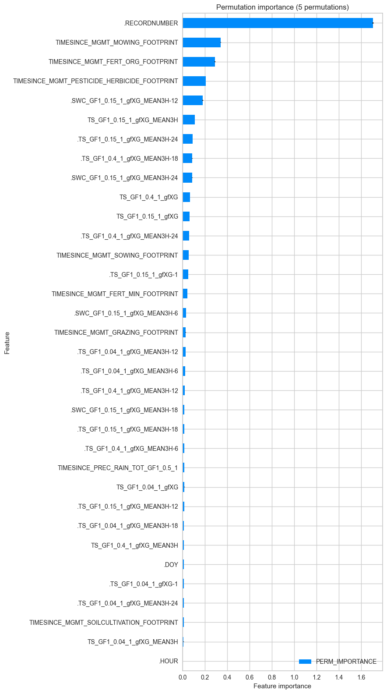
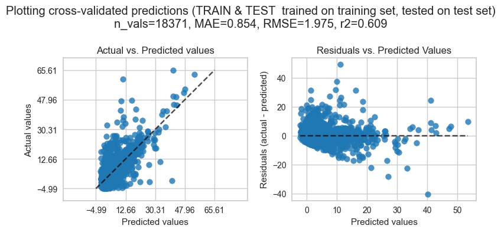
>>> Plotting residuals and prediction error ...
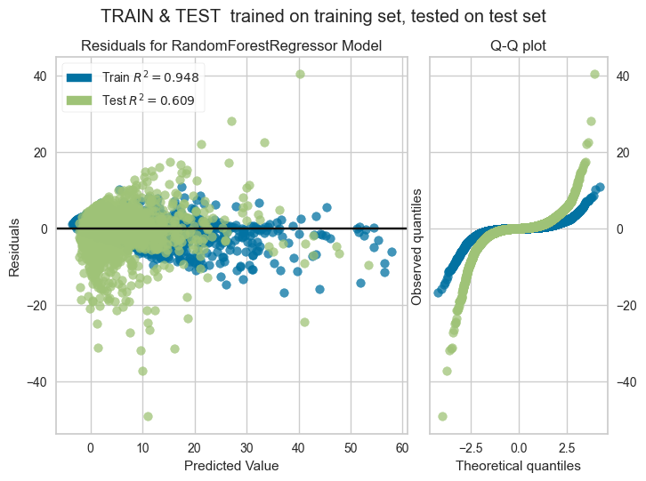
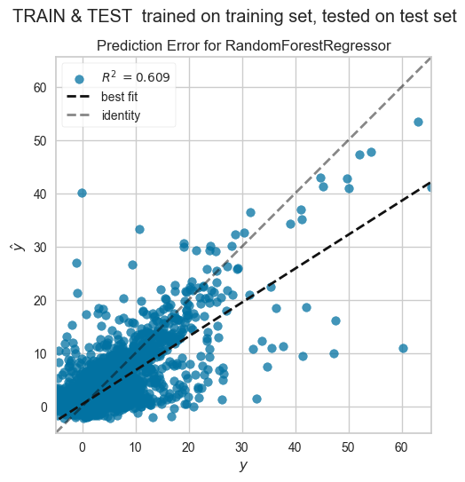
>>> Collecting results, details about training and testing can be accessed by calling .report_traintest().
>>> Done.
Gap-filling using final model ...
>>> Using final model on all data to predict target FN2O_L3.1_L3.3_CUT_50_QCF ...
>>> Using final model on all data to calculate permutation importance ...
>>> Plotting feature importances (permutation importance) ...
>>> Calculating prediction scores based on all data predicting FN2O_L3.1_L3.3_CUT_50_QCF ...
>>> Plotting observed and predicted values based on all data ...
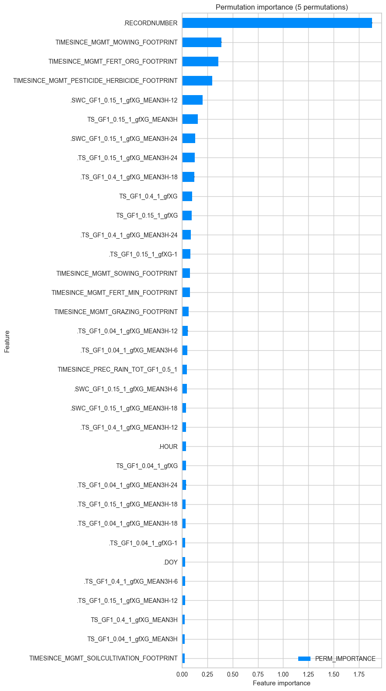
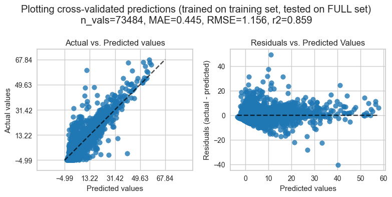
>>> Predicting target FN2O_L3.1_L3.3_CUT_50_QCF where all features are available ... predicted 192864 records.
>>> Collecting results for final model ...
>>> Filling 119380 missing records in target with predictions from final model ...
>>> Storing gap-filled time series in variable FN2O_L3.1_L3.3_CUT_50_QCF_gfRF ...
>>> Restoring original timestamp in results ...
Gap-filling 0 remaining missing records in FN2O_L3.1_L3.3_CUT_50_QCF_gfRF using fallback model ...
>>> Fallback model not necessary, all gaps were already filled.
>>> Combining predictions from full model and fallback model ...
===================
GAP-FILLING RESULTS
===================
Model scores and feature importances were calculated from high-quality predicted targets (119380 values, FN2O_L3.1_L3.3_CUT_50_QCF_gfRF where flag=1) in comparison to observed targets (73484 values, FN2O_L3.1_L3.3_CUT_50_QCF).
## TARGET
- first timestamp: 2012-01-01 00:15:00
- last timestamp: 2022-12-31 23:45:00
- potential number of values: 192864 values)
- target column (observed): FN2O_L3.1_L3.3_CUT_50_QCF
- missing records (observed): 119380 (cross-check from flag: 119380)
- target column (gap-filled): FN2O_L3.1_L3.3_CUT_50_QCF_gfRF (192864 values)
- missing records (gap-filled): 0
- gap-filling flag: FLAG_FN2O_L3.1_L3.3_CUT_50_QCF_gfRF_ISFILLED
> flag 0 ... observed targets (73484 values)
> flag 1 ... targets gap-filled with high-quality, all features available (119380 values)
> flag 2 ... targets gap-filled with fallback (0 values)
## FEATURE IMPORTANCES
- names of features used in model: ['.RECORDNUMBER', 'TIMESINCE_MGMT_MOWING_FOOTPRINT', 'TIMESINCE_MGMT_FERT_ORG_FOOTPRINT', 'TIMESINCE_MGMT_PESTICIDE_HERBICIDE_FOOTPRINT', '.SWC_GF1_0.15_1_gfXG_MEAN3H-12', 'TS_GF1_0.15_1_gfXG_MEAN3H', '.SWC_GF1_0.15_1_gfXG_MEAN3H-24', '.TS_GF1_0.15_1_gfXG_MEAN3H-24', '.TS_GF1_0.4_1_gfXG_MEAN3H-18', 'TS_GF1_0.4_1_gfXG', 'TS_GF1_0.15_1_gfXG', '.TS_GF1_0.4_1_gfXG_MEAN3H-24', '.TS_GF1_0.15_1_gfXG-1', 'TIMESINCE_MGMT_SOWING_FOOTPRINT', 'TIMESINCE_MGMT_FERT_MIN_FOOTPRINT', 'TIMESINCE_MGMT_GRAZING_FOOTPRINT', '.TS_GF1_0.04_1_gfXG_MEAN3H-12', '.TS_GF1_0.04_1_gfXG_MEAN3H-6', 'TIMESINCE_PREC_RAIN_TOT_GF1_0.5_1', '.SWC_GF1_0.15_1_gfXG_MEAN3H-6', '.SWC_GF1_0.15_1_gfXG_MEAN3H-18', '.TS_GF1_0.4_1_gfXG_MEAN3H-12', '.HOUR', 'TS_GF1_0.04_1_gfXG', '.TS_GF1_0.04_1_gfXG_MEAN3H-24', '.TS_GF1_0.15_1_gfXG_MEAN3H-18', '.TS_GF1_0.04_1_gfXG_MEAN3H-18', '.TS_GF1_0.04_1_gfXG-1', '.DOY', '.TS_GF1_0.4_1_gfXG_MEAN3H-6', '.TS_GF1_0.15_1_gfXG_MEAN3H-12', 'TS_GF1_0.4_1_gfXG_MEAN3H', 'TS_GF1_0.04_1_gfXG_MEAN3H', 'TIMESINCE_MGMT_SOILCULTIVATION_FOOTPRINT']
- number of features used in model: 34
- permutation importances were calculated from 5 repeats.
PERM_IMPORTANCE PERM_SD
.RECORDNUMBER 1.880336 0.017201
TIMESINCE_MGMT_MOWING_FOOTPRINT 0.390518 0.004790
TIMESINCE_MGMT_FERT_ORG_FOOTPRINT 0.358987 0.002321
TIMESINCE_MGMT_PESTICIDE_HERBICIDE_FOOTPRINT 0.297390 0.004593
.SWC_GF1_0.15_1_gfXG_MEAN3H-12 0.204616 0.007422
TS_GF1_0.15_1_gfXG_MEAN3H 0.154848 0.000763
.SWC_GF1_0.15_1_gfXG_MEAN3H-24 0.128774 0.003285
.TS_GF1_0.15_1_gfXG_MEAN3H-24 0.126332 0.000786
.TS_GF1_0.4_1_gfXG_MEAN3H-18 0.120275 0.001594
TS_GF1_0.4_1_gfXG 0.098896 0.001071
TS_GF1_0.15_1_gfXG 0.095178 0.000741
.TS_GF1_0.4_1_gfXG_MEAN3H-24 0.087815 0.000902
.TS_GF1_0.15_1_gfXG-1 0.080978 0.000762
TIMESINCE_MGMT_SOWING_FOOTPRINT 0.077550 0.000976
TIMESINCE_MGMT_FERT_MIN_FOOTPRINT 0.077322 0.001847
TIMESINCE_MGMT_GRAZING_FOOTPRINT 0.063503 0.000458
.TS_GF1_0.04_1_gfXG_MEAN3H-12 0.053963 0.002416
.TS_GF1_0.04_1_gfXG_MEAN3H-6 0.049993 0.000777
TIMESINCE_PREC_RAIN_TOT_GF1_0.5_1 0.048898 0.001596
.SWC_GF1_0.15_1_gfXG_MEAN3H-6 0.048243 0.000438
.SWC_GF1_0.15_1_gfXG_MEAN3H-18 0.039641 0.000737
.TS_GF1_0.4_1_gfXG_MEAN3H-12 0.039246 0.000214
.HOUR 0.038526 0.001035
TS_GF1_0.04_1_gfXG 0.037555 0.000639
.TS_GF1_0.04_1_gfXG_MEAN3H-24 0.036820 0.000529
.TS_GF1_0.15_1_gfXG_MEAN3H-18 0.035185 0.000331
.TS_GF1_0.04_1_gfXG_MEAN3H-18 0.034204 0.000318
.TS_GF1_0.04_1_gfXG-1 0.031626 0.001433
.DOY 0.031140 0.000316
.TS_GF1_0.4_1_gfXG_MEAN3H-6 0.030632 0.000106
.TS_GF1_0.15_1_gfXG_MEAN3H-12 0.028225 0.000269
TS_GF1_0.4_1_gfXG_MEAN3H 0.027509 0.000166
TS_GF1_0.04_1_gfXG_MEAN3H 0.025590 0.000354
TIMESINCE_MGMT_SOILCULTIVATION_FOOTPRINT 0.025311 0.000356
## MODEL
The model was trained on a training set with test size 25.00%.
- estimator: RandomForestRegressor(n_estimators=500, n_jobs=-1, random_state=42)
- parameters: {'bootstrap': True, 'ccp_alpha': 0.0, 'criterion': 'squared_error', 'max_depth': None, 'max_features': 1.0, 'max_leaf_nodes': None, 'max_samples': None, 'min_impurity_decrease': 0.0, 'min_samples_leaf': 1, 'min_samples_split': 2, 'min_weight_fraction_leaf': 0.0, 'monotonic_cst': None, 'n_estimators': 500, 'n_jobs': -1, 'oob_score': False, 'random_state': 42, 'verbose': 0, 'warm_start': False}
## MODEL SCORES
- MAE: 0.44507435090607805 (mean absolute error)
- MedAE: 0.14292422385999654 (median absolute error)
- MSE: 1.3360409078055524 (mean squared error)
- RMSE: 1.1558723579208703 (root mean squared error)
- MAXE: 49.21867002131998 (max error)
- MAPE: 1.511 (mean absolute percentage error)
- R2: 0.8588531687887548
Result#
new gap-filled fluxes
var_new_gapfilled = rfts.get_gapfilled_target().name
var_new_flag = rfts.get_flag().name
new_gapfilling_df = rfts.gapfilling_df_
# new_gapfilling_df = new_gapfilling_df[[var_new_gapfilled, var_new_flag]]
new_gapfilling_df
| .PREDICTIONS_FULLMODEL | FN2O_L3.1_L3.3_CUT_50_QCF | .GAP_PREDICTIONS | FLAG_FN2O_L3.1_L3.3_CUT_50_QCF_gfRF_ISFILLED | FN2O_L3.1_L3.3_CUT_50_QCF_gfRF | .PREDICTIONS_FALLBACK | .GAPFILLED_CUMULATIVE | .PREDICTIONS | |
|---|---|---|---|---|---|---|---|---|
| TIMESTAMP_MIDDLE | ||||||||
| 2012-01-01 00:15:00 | 0.864984 | NaN | 0.864984 | 1 | 0.864984 | None | 0.864984 | 0.864984 |
| 2012-01-01 00:45:00 | 0.901270 | NaN | 0.901270 | 1 | 0.901270 | None | 1.766254 | 0.901270 |
| 2012-01-01 01:15:00 | 0.894906 | NaN | 0.894906 | 1 | 0.894906 | None | 2.661160 | 0.894906 |
| 2012-01-01 01:45:00 | 0.869810 | NaN | 0.869810 | 1 | 0.869810 | None | 3.530970 | 0.869810 |
| 2012-01-01 02:15:00 | 0.866038 | NaN | 0.866038 | 1 | 0.866038 | None | 4.397008 | 0.866038 |
| ... | ... | ... | ... | ... | ... | ... | ... | ... |
| 2022-12-31 21:45:00 | 0.686662 | NaN | 0.686662 | 1 | 0.686662 | None | 255410.262483 | 0.686662 |
| 2022-12-31 22:15:00 | 0.682528 | NaN | 0.682528 | 1 | 0.682528 | None | 255410.945011 | 0.682528 |
| 2022-12-31 22:45:00 | 0.654227 | NaN | 0.654227 | 1 | 0.654227 | None | 255411.599238 | 0.654227 |
| 2022-12-31 23:15:00 | 0.748270 | NaN | 0.748270 | 1 | 0.748270 | None | 255412.347508 | 0.748270 |
| 2022-12-31 23:45:00 | 0.756087 | NaN | 0.756087 | 1 | 0.756087 | None | 255413.103595 | 0.756087 |
192864 rows × 8 columns
Plot#
# Store previously gap-filled flux For comparison
flux_gapfilled_orig = FLUX_df[GAPF_var].copy()
flux_gapfilled_orig.name = f"{GAPF_var}_orig"
diff = new_gapfilling_df[var_new_gapfilled].sub(flux_gapfilled_orig)
diff.name = "difference"
fig, axs = plt.subplots(ncols=4, figsize=(24, 12), dpi=150, layout="constrained")
HeatmapDateTime(series=flux_gapfilled_orig, ax=axs[0]).plot() # Gap-filled flux from previous gap-filling
HeatmapDateTime(series=new_gapfilling_df[GAPF_var], ax=axs[1]).plot() # New gap-filling
HeatmapDateTime(series=new_gapfilling_df[MEASURED_var], ax=axs[2]).plot() # Original measured data
HeatmapDateTime(series=diff, ax=axs[3]).plot() # Difference between previous gap-filling and new gap-filling, to check if it worked for the three years
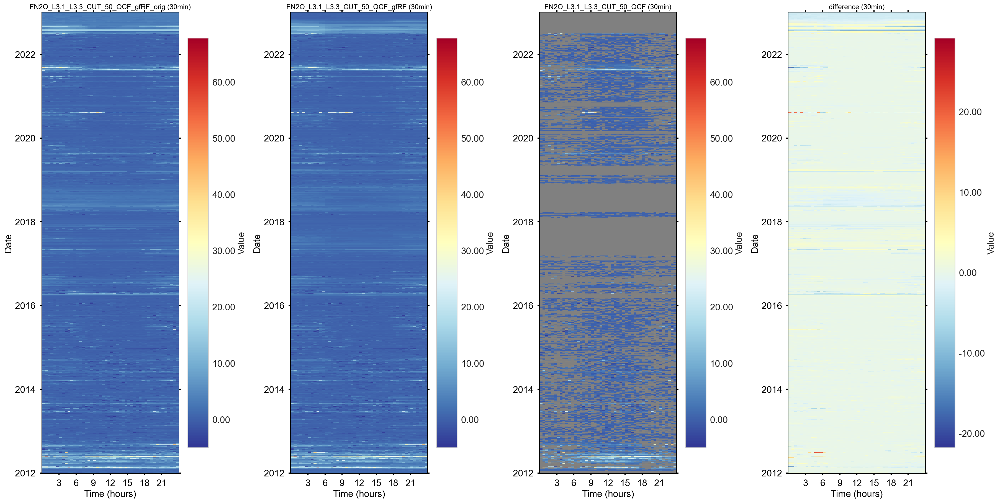
# TimeSeries(series=new_gapfilling_df[var_new_gapfilled].cumsum()).plot()
Add three years back to main data#
Identify locations that are replaced in previous gap-filling#
# Last day of flux measurement was 6 Jul 2022
replacelocs = ( (FLUX_df[FLAG_var] > 0) & (FLUX_df.index.year >= 2017) & (FLUX_df.index.year <= 2018) ) | ( (FLUX_df[FLAG_var] > 0) & (FLUX_df.index.date >= dt.date(2022, 7, 1)) )
HeatmapDateTime(series=replacelocs).plot() # Previous gap-filling in the three years
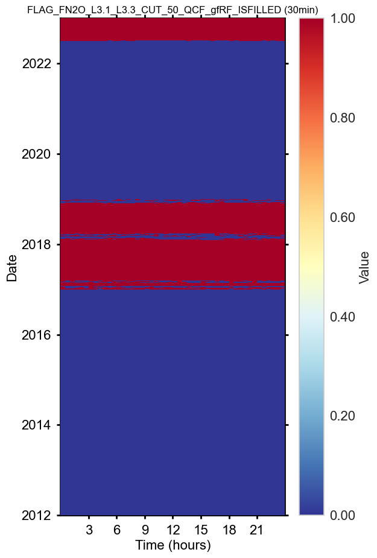
Remove records from previous gap-filling#
FLUX_df.loc[replacelocs, GAPF_var] = np.nan
FLUX_df.loc[replacelocs, FLAG_var] = np.nan
fig, axs = plt.subplots(ncols=3, figsize=(24, 12), dpi=150, layout="constrained")
HeatmapDateTime(series=FLUX_df[MEASURED_var], ax=axs[0]).plot() # Previous gap-filling in the three years
HeatmapDateTime(series=FLUX_df[GAPF_var], ax=axs[1]).plot() # New gap-filling in the three years
HeatmapDateTime(series=FLUX_df[FLAG_var], ax=axs[2]).plot() # Different scaling! Shows where OLD was replaced with NEW
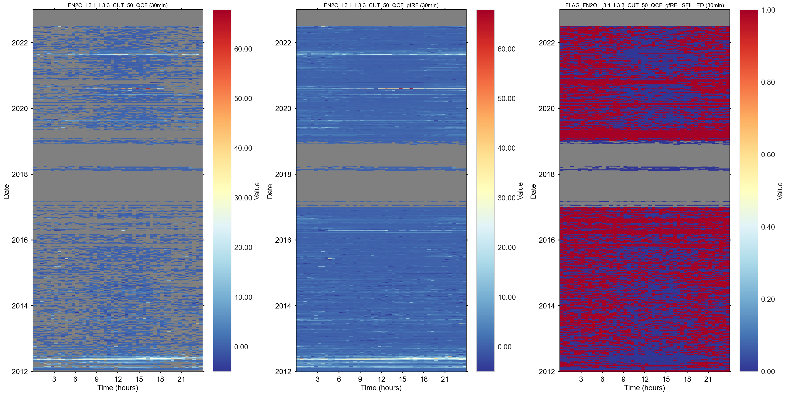
Fill new gap-filling into gaps#
fig, axs = plt.subplots(ncols=4, figsize=(24, 12), dpi=150, layout="constrained")
# First show data with gaps
HeatmapDateTime(series=FLUX_df[GAPF_var], ax=axs[0]).plot() #
HeatmapDateTime(series=FLUX_df[FLAG_var], ax=axs[2]).plot() #
# Fill gaps
FLUX_df[GAPF_var] = FLUX_df[GAPF_var].fillna(new_gapfilling_df[GAPF_var])
FLUX_df[FLAG_var] = FLUX_df[FLAG_var].fillna(new_gapfilling_df[FLAG_var])
# Show data with filled gaps
HeatmapDateTime(series=FLUX_df[GAPF_var], ax=axs[1]).plot() #
HeatmapDateTime(series=FLUX_df[FLAG_var], ax=axs[3]).plot() #
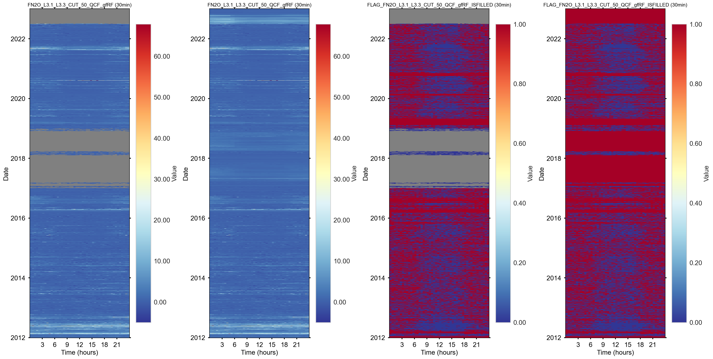
Plot cumulatives: After#
s = FLUX_df[GAPF_var].copy()
s = s.multiply(gain)
CumulativeYear(
series=s,
series_units=units,
yearly_end_date=None,
# yearly_end_date='08-11',
start_year=2012,
end_year=2022,
show_reference=True,
excl_years_from_reference=None,
highlight_year=None,
highlight_year_color='#F44336').plot()
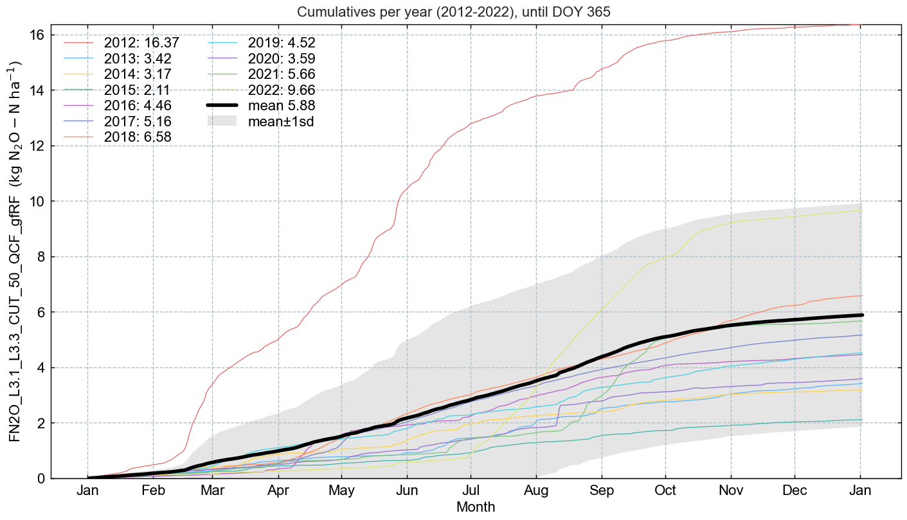
Save to file#
outfile = f"51.3_CorrectionGapFilling_L4.1_{suffix}_{ustar_scenario}"
FLUX_df.to_csv(f"{outfile}.csv") # large file, slow to read
save_parquet(data=FLUX_df, filename=f"{outfile}") # Smaller file, very fast to read
Saved file 51.3_CorrectionGapFilling_L4.1_FN2O_CUT_50.parquet (0.417 seconds).
'51.3_CorrectionGapFilling_L4.1_FN2O_CUT_50.parquet'
End of notebook#
Congratulations, you reached the end of this notebook! Before you go let’s store your finish time.
dt_string = datetime.now().strftime("%Y-%m-%d %H:%M:%S")
print(f"Finished. {dt_string}")
Finished. 2025-02-07 11:54:51